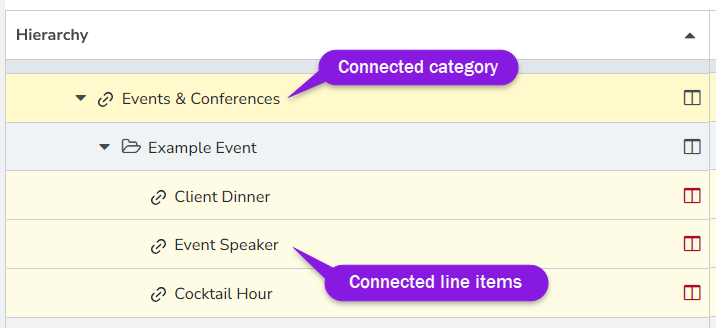
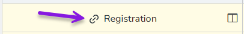
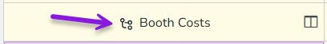

Investments section
The  Investments section is the workspace where you track marketing spend data. It is the data entry area of Uptempo Financial Management, and allows you to compare your plan, forecast, purchase orders (POs) and actuals. You can see how the bottom-up plan has changed throughout the year, and view your current spend at any time. The
Investments section is the workspace where you track marketing spend data. It is the data entry area of Uptempo Financial Management, and allows you to compare your plan, forecast, purchase orders (POs) and actuals. You can see how the bottom-up plan has changed throughout the year, and view your current spend at any time. The  Investments section has numerous basic and advanced features to assist you at all stages of the planning phase.
Investments section has numerous basic and advanced features to assist you at all stages of the planning phase.

The selected investment plan (1). For details, see Navigate investment plans.
The investment hierarchy (2), and the investment grid and display settings (3) For details, see The investment hierarchy.
The performance insight cards (4). For details, see Performance insight cards.
Navigate investment plans
You can directly access any investment plan from the  Budgets section.
Budgets section.
Open an investment plan
In the
 Budgets section, find the investment plan you would like to open in the budget hierarchy.
Budgets section, find the investment plan you would like to open in the budget hierarchy.Click Go to investment plan on the investment plan.
The selected investment plan is displayed.
While viewing any investment plan in the  Investments section, you can quickly switch to another investment plan.
Investments section, you can quickly switch to another investment plan.
Switch between investment plans
In the
 Investments section, click the name of the investment plan you're currently viewing near the top of the page to open the menu of available investment plans.
Investments section, click the name of the investment plan you're currently viewing near the top of the page to open the menu of available investment plans.In the menu, select the investment plan you want to switch to.
The system displays the selected investment plan.
The investment hierarchy

When you view an investment plan in the  Investments section, your investment data is displayed in a table called the investment grid.
Investments section, your investment data is displayed in a table called the investment grid.
The first column in the investment grid is the Hierarchy column. This column displays the investment hierarchy, which represents the structure of the investment plan.
Investment items
Each investment hierarchy consists of the following elements, which are collectively called investment items:
 Category
CategoryA top-level folder, used to organize line items in the investment plan. Can contain sub-categories for further organization of the investment hierarchy.
 Sub-category
Sub-categoryA subordinate folder, used to organize line items and placeholders within top-level categories. Can also be created within another sub-category to add additional investment hierarchy levels.
- Line Item
An individual investment which is associated with cost and spend amounts. Can be created within a category or sub-category**.**
- Placeholder
A temporary line item used during the planning phase to earmark funds for future use. Can be created within a category or sub-category.
You can use the buttons displayed above the investment grid to add these different investment items and build your investment hierarchy.
Grand Total and sub-totals in the investment grid
The Grand Total row is displayed as the first row in the investment grid. It displays the total of the line item and placeholder amounts in each column in the investment grid. You can use it to track total spend data according to your organization’s configured columns.
Each category and sub-category row in the investment grid also displays a sub-total of amounts aggregated from line items and placeholders within it.
Identifying connected investments
When you are viewing the investment hierarchy, investment items that are connected to activities have visual indicators to help you identify them at a glance.
If an investment item (category, sub-category, or line item) is connected to an activity, its table row is highlighted in yellow (categories are displayed in a slightly darker shade than sub-categories and line items): 
Each connected investment items is also displayed with a special icon beside its name that indicates the type of connection. These icons replace the standard category, sub-category, and line items icons, and have the following meanings:
If an investment item is connected to a single activity and is using automatic allocation, the
 Activity Connected icon is displayed:
Activity Connected icon is displayed:
If an investment item is connected to multiple activities, the Multi-Activity Funding icon is displayed:

Investment grid columns and display settings
The columns in the investment grid table are where you enter and maintain the cost and spend data in your investment plan. You can use the display settings near the top of the page to control the data that is shown in the investment grid:

For more information, see Set up the workspace.
Performance insight cards

Performance insight cards contain key marketing plan indicators and are displayed at the top of the  Investments section for ease of access. This can assist when reallocating costs in your investments and provides key information through all stages of your fiscal year.
Investments section for ease of access. This can assist when reallocating costs in your investments and provides key information through all stages of your fiscal year.
The Metrics card displays your top-down allocation. Common metrics cards include:
FY Investment Target, is total amount of budget allocated for the fiscal year
FY Left to plan, is remaining budget left to allocate to investments during the planning phase. This number will decrease as additional investments are planned
FY Plan, is total aggregated value of investments planned for the fiscal year
The Alignment scorecard shows what percentage your budget is aligned with strategic investments defined by your organization to help you meet strategic goals.